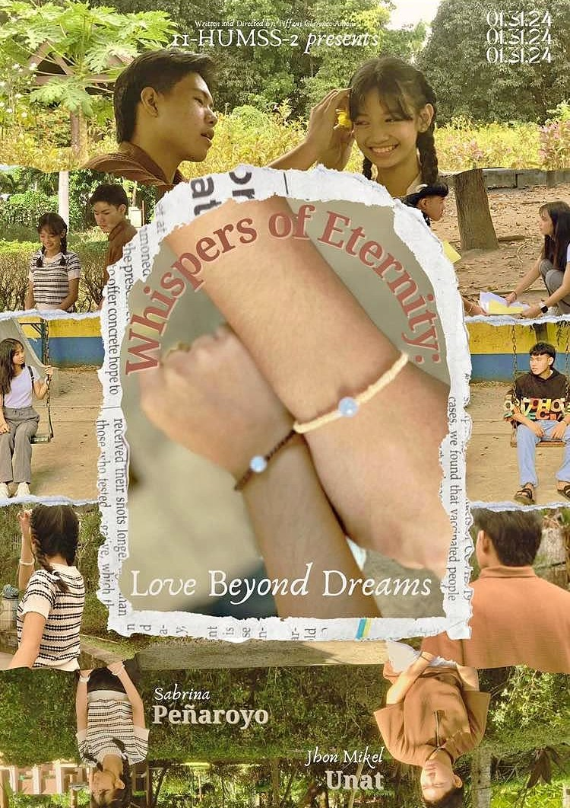

GET TO KNOW ME!
Hello, I'm Tiffany!
"Do it scared."
I'm Tiffany Clarence A. Antoni, but you may call me Tiff. I'm 19 years old, and I reside in Pasig City. Currently, I am a full-time sophomore student under BAMS at UPOU. I'm a dream chaser who's currently learning to do it scared. Little by little, I'm becoming more open to trying new things, taking on challenges, and figuring out what I'm capable of.
Things I Love
I always seek to find profound appreciation for almost everything in general, but here are some of the things that I really hold close to my heart:
- Singing
- Crafting
- Music
- Video Games
- Coffee
- My Family and Pets
Passion Projects
Whispers of Eternity Trailer
A trailer I made for our short film during senior high school. It was my first time creating a teaser for a project, so I was still figuring things out as I went. Despite being a beginner, this remains one of my favorite and most memorable works!
01/30/2024strong>
Oblation Photograph
A photo of the Oblation that I took during my first visit to the UPOU headquarters. I love capturing things that hold a special meaning to me, and this photograph will always remind me of the first time I stepped into a place that has become a part of a new journey of mine.
07/29/2025
Whispers of Eternity Poster

A film poster I created alongside the short film trailer for our senior high school project. I was still beginning to explore graphic design at the time, but I had fun creating this because it allowed me to experiment and figure out the style that suited me best. It was also through this project that I discovered my fondness for scrapbook-inspired designs!
01/30/2024